A 905 nm micro-pulse photon-counting LiDAR that reads Mars's dust and cloud profiles from the ground — designed end to end, from a closed link budget down to the 40 A gallium-nitride pulse loop, and standing in the city as a live asset that fires a visible probe beam. Beside it stands an optical observatory whose 512×512 photon-counting focal plane exists only because seven rounds of device physics turned a dark-count problem into a sub-hertz one.
A single-site atmospheric LiDAR: point a low-energy pulsed laser straight up, count the photons that scatter back off dust and ice, and invert the echo into a vertical profile.
The station is a wedge enclosure barely 1.6 m across, tilted-roof to shed dust, with two optical ports on top — a transmit beam expander and a Ø125 mm receive telescope — a nine-fin radiator wall, four leveling feet, a tilted solar panel, and a 3.5 m weather mast. Everything electrical lives inside: three custom boards, an FPGA, a battery.
It runs a micro-pulse, photon-counting regime: 3 µJ pulses at 9.5 kHz rather than one big shot, so the average launched power is only 28.5 mW. Sensitivity is bought back with high repetition and long integration — which is exactly what lets the whole station run off a small solar panel.
In the city it is asset sci-lidar-01, built as real-metric three.js geometry that emits a 905 nm probe beam off its 20° roof.
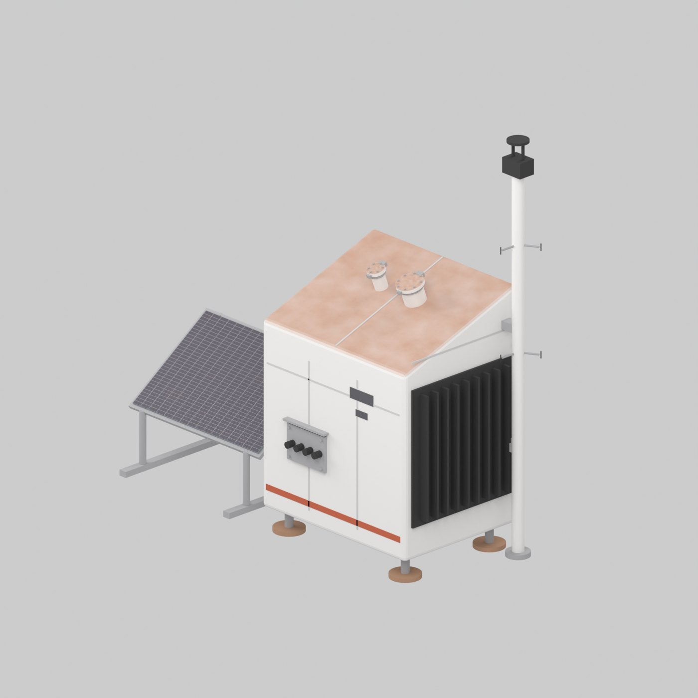
A 6 m hemispherical dome on a compacted-regolith plinth, with a dust-sealed up-and-over slit shutter. Inside, a 200 mm f/5 Ritchey–Chrétien on an alt-azimuth fork looks out through the slit. At dusk the shutter leaf rides along its rails over the zenith and parks on the back of the dome; the dome then slews slowly through the night and reseals at dawn. That is real articulation in the city model, not a painted texture — shutter, dome azimuth and telescope elevation are named joints the engine drives.
A 20 cm aperture sounds modest until you account for where it stands. The Martian atmosphere is 0.6 % the density of Earth's, so seeing is close to space-like: the 0.7″ diffraction limit sits well inside a 3.09″ pixel, and the pixel — not the air — sets the resolution. What makes the instrument interesting is not the mirror. It is that everything downstream of the first photon was designed here: the detector, the readout chip, its layout, the optics and the thermal path.
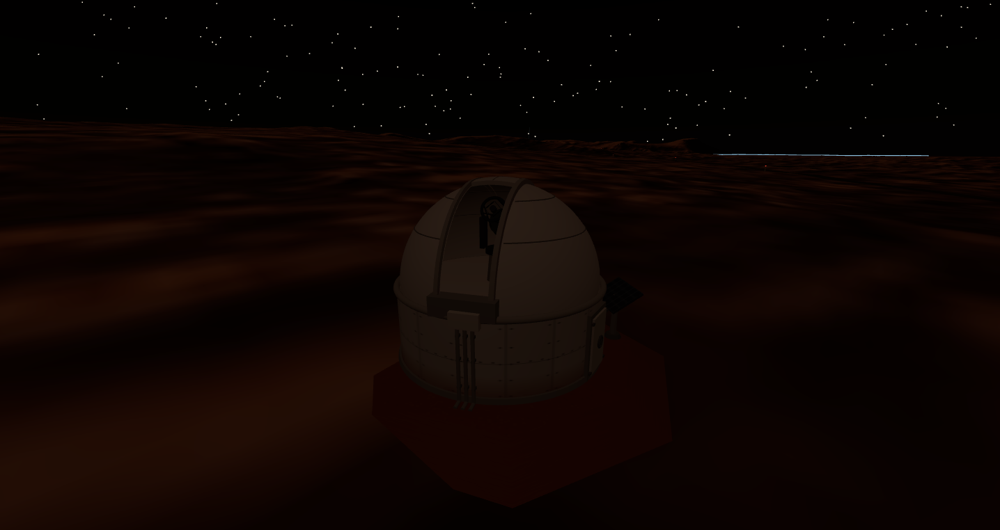
A biaxial transmit/receive pair, and the two things that decide where it can actually see: the geometric overlap near the ground, and the noise floor far away.
Transmit and receive sit side by side, port centers 0.38 m apart, the laser tilted 0.28 mrad inward so the narrow beam walks into the receiver's field of view. That geometry gives a hard blind zone below 0.29 km and full overlap by 0.64 km — pulling the ports closer than the first design (0.76 m) is what lowered the blind floor.
Far away, the limit is background: a 0.3 nm filter and a 1 mrad field stop knock down the daytime sky so a single returning photon still clears threshold. The detector is a cooled silicon SPAD array (the device end, below); the receiver front end turns one photoelectron into a 16 mV pulse and discriminates it at a half-photoelectron threshold. The FPGA histograms arrivals into 1000 range bins of 15 m each — a 15 km window.
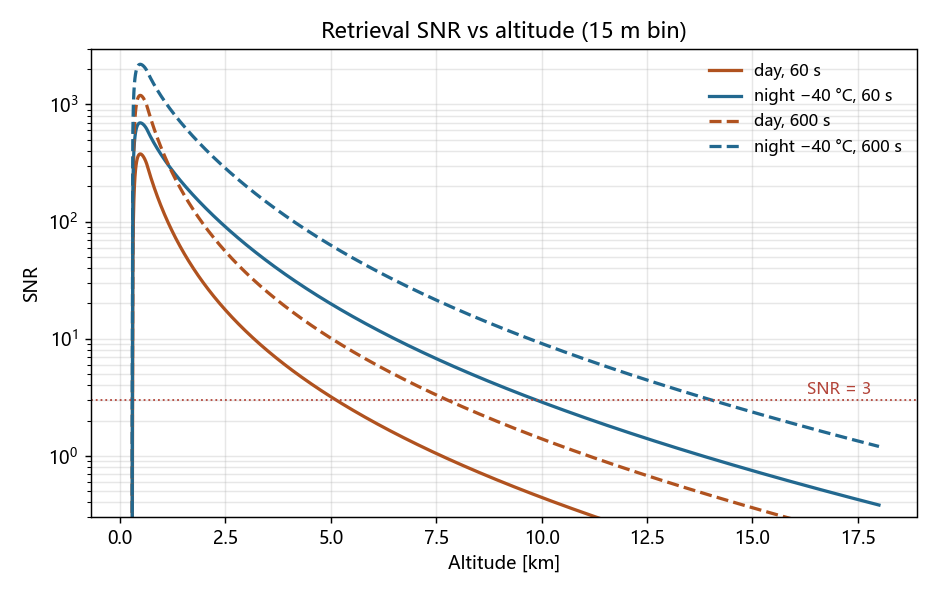
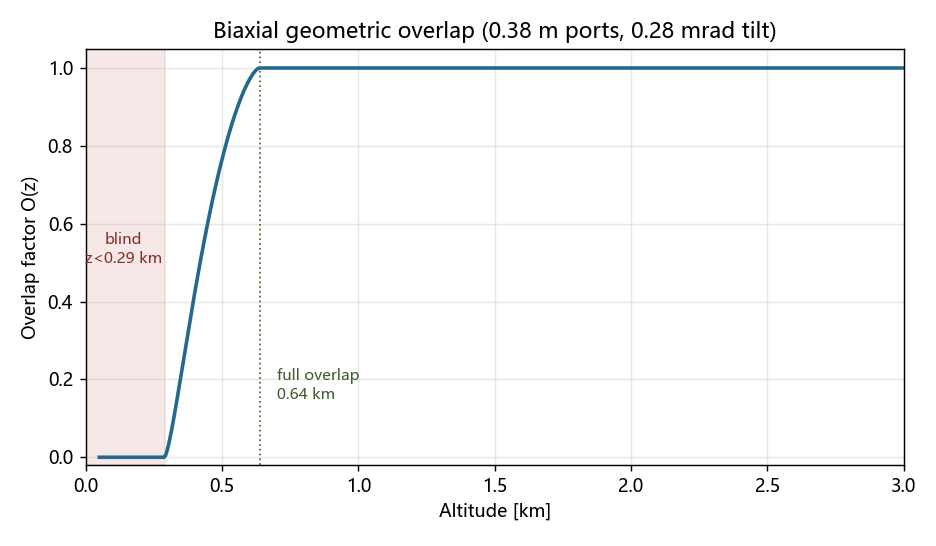
At the heart of the receiver is a purpose-built near-infrared SPAD array — its own device-physics story.
The array is nir_iproc_p10j, a 1×1 mm silicon photon counter (625 cells) developed on the spad40 process line and frozen for this instrument. Its 905 nm photon-detection efficiency, dark-count floor, and breakdown behavior were closed out in TCAD and feed directly into the link budget above.
Device-physics figures and the TCAD ledger (PDE(V), dark-count trimming, McIntyre breakdown, Geiger transient) are supplemented here by the spad40_nir session. The system-level delivered values it hands off — PDE@905 40.3%, back-to-back floor 253 cps·cell⁻¹, array DCR 2.65×10⁵ cps @ −40 °C — are the inputs the numbers above are built on.
Four design problems in series. Each one changed the answer to the next.
Photon-starved astronomy is a dark-count problem before it is anything else. The budget was under 1 Hz per pixel. The first real-process port of the parent SPAD sat at a peak multiplication field of 6×105 V/cm — deep in band-to-band tunnelling territory. A dose sweep measured the law: dark count ×10 for every 0.29×105 V/cm of peak field. Reaching 1 Hz in a 15 µm pixel needs ≤4.24×105 V/cm — but at that field the sharp junction's trigger probability collapses below 0.5. Trimming the implant dose cannot close this budget. That negative result is what forced an architectural change.
The fix is to buy the ionization integral with width instead of field: insert a low-doped gap between the charge sheet and the substrate so the gap carries a flat field E = qN/ε. Two knobs then control everything — retained dose sets the field, buffer thickness sets the multiplication width. Seven process rounds and about eighteen device variants later, iwK115 lands at 4.33×105 V/cm across a 0.74 µm multiplication width, trigger probability 0.904, and a measured band-to-band floor of 0.383 Hz per 15 µm pixel.
Two consequences fell out of that geometry. Because the operating field is set by the retained charge rather than by the bias, it is temperature-independent — so a single fixed 88 V serves the whole 120 K diurnal swing and the bias-tracking servo a classical SPAD needs is simply deleted. And because a wide-multiplication device has a large lateral roll-off, an 8.14 µm dead border per side would have eaten a 15 µm pixel alive: a light 2.0×1012 edge-ring implant shrinks it to 4.45 µm/side for +1.3 % centre field. A microlens then decouples fill factor from pitch entirely — 15 µm with a microlens (0.88 effective) beats a bare 40 µm pixel (0.79) while cutting dark volume and radiation-damage rate about sevenfold.
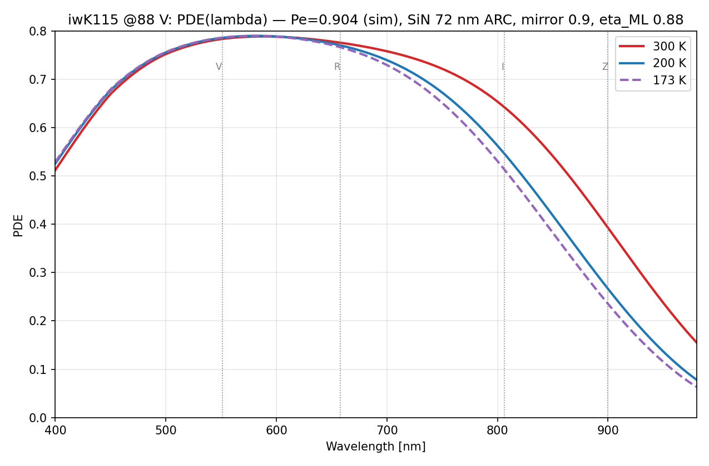
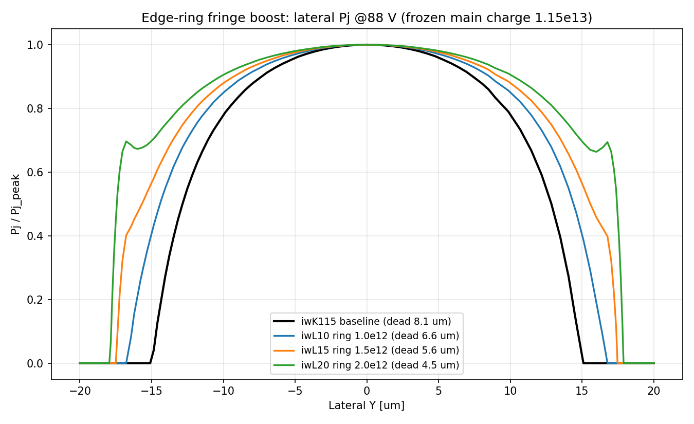
The partition came before the circuit. The quench divider — 3.6 MΩ and 270 kΩ of hi-res poly — stays on the SPAD die, so 88 V and the full avalanche swing never leave it. The readout ASIC's highest rail is 3.3 V, and exactly one high-voltage line exists in the whole instrument. Several mechanical and safety margins later on this page are downstream of that single decision.
Each pixel is a two-stage 3.3 V sense inverter, a level shifter and a toggle flip-flop — one bit of frame memory, read at 1 kHz. Photon rate is recovered off-pixel from the parity statistics, λ = −ln(1−2p̄)/(2T_f), which costs 0.26 Gbps for a 512² array and needs no counter, no ADC and no analog column chain. A bright star saturates parity at p→0.5 and reads as a flat top instead of wrapping around, and the flip-flop doubles as the scan latch.
The silicon is drawn by Python generators that emit Cadence SKILL, then verified with Calibre: 12 cells, DRC 0 on every one, LVS CORRECT 11 of 11. The pixel is 12.0 × 16.0 µm drawn on a 14.97 µm rail pitch, mirror-tiled so neighbouring rows share power rails. After parasitic extraction, three photons produce three bit-line toggles at 118.2 / 519.0 / 919.1 ns against a pre-layout 118.6 / 519.3 / 919.1 — agreement within 0.5 ns through the real RC. The complete tile (4×4 array + one-hot scan row driver + column latches, fully routed) closes at 28 ports, 240 nets and 580→532 devices.
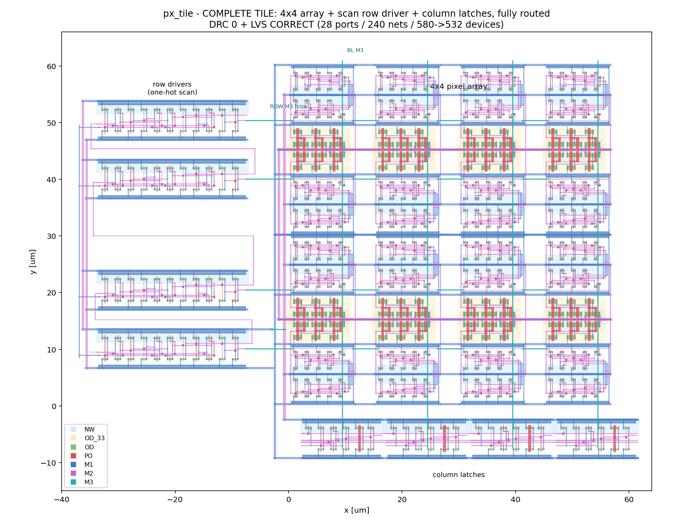
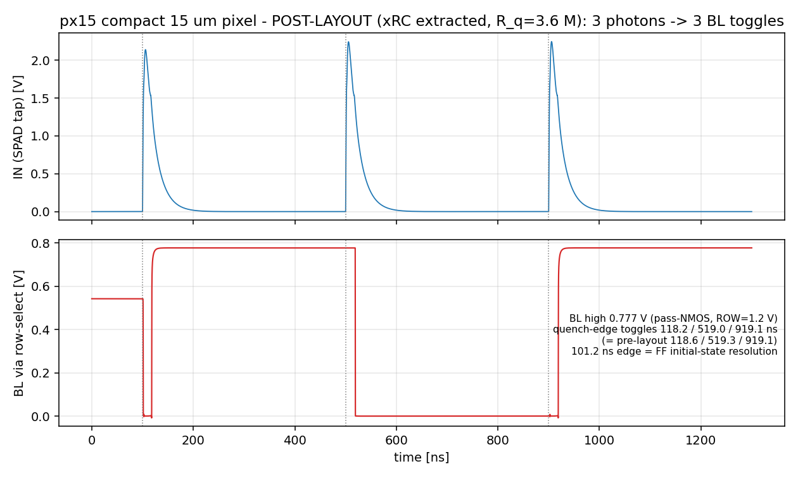
The telescope is sized to the sensor rather than the other way round: 200 mm f/5, 1000 mm focal length, giving 3.09″ per pixel over a 26.4′ square field. The microlenses impose a chief-ray-angle limit of 3°, and plain geometry meets it — an exit pupil 200–300 mm from the focal plane puts the edge chief ray at 1.0–1.6°, so no field lens is needed.
Focus is the unforgiving one. Depth of focus is ±35 µm, while a CFRP metering truss drifts 306 µm over the 120 K day–night swing once secondary magnification multiplies it seventeen times. Invar overshoots by 26×, aluminium by 402×. No passive structure survives, so an active secondary focuser is mandatory — ±1 mm travel, 1 µm steps, driven from a temperature table and trimmed on a star at the start of each night.
Cooling, by contrast, is nearly free. The whole cold assembly dissipates 127 mW at night — and only 2.5 mW of that is the detector array; struts and harness account for 94 mW. A 64 cm² passive radiator holds the focal plane at 173 K with no cryocooler and no heater loop, because the fixed-bias device tolerates the whole temperature range anyway.
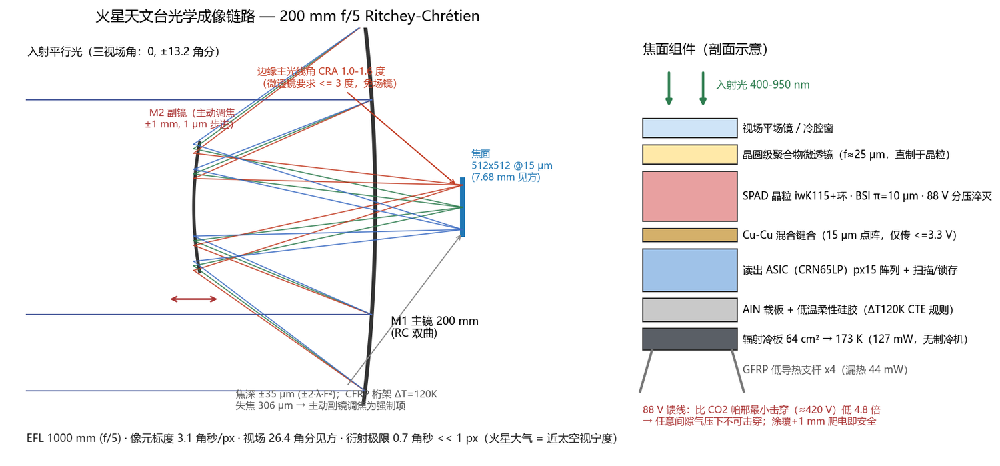
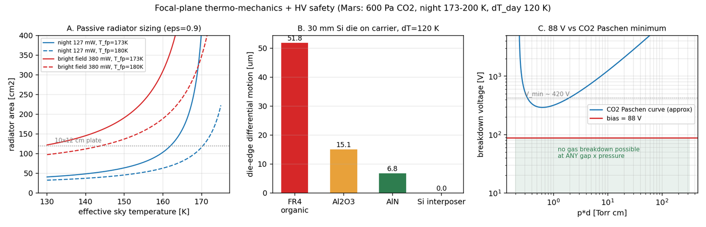
With every constant fixed by the verified design — effective aperture, 0.55 broadband PDE, 0.88 microlens fill factor, the measured 0.383 Hz/px dark rate and 1 ms binary frames — the instrument can be simulated forward. A single frame is startling: 178 lit pixels out of 262 144, a scatter of one-bit dots in which Phobos is a single point. Stack 60 000 of them, invert the parity, and a real sky appears: point sources down to magnitude 20.8 at SNR 5, a Sérsic galaxy, radiation hot pixels that calibrate out, Phobos drawn into a streak by its own motion, and the bright star sitting there with a flat parity-saturated core instead of a bloomed, overflowed one.
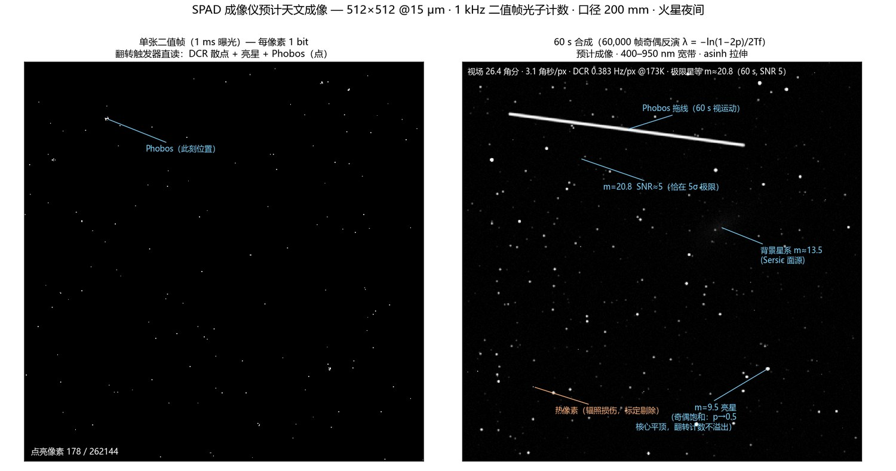
Every headline number, and which run produced it.
| Claim | Value | Produced by |
|---|---|---|
| Night detection ceiling (600 s, −40 °C) | 14.0 km | mars_lidar/design/link_budget.py |
| Daytime ceiling (60 s, 0.3 nm filter) | 5.1 km | mars_lidar/design/link_budget.py |
| Range resolution | 15 m | mars_lidar/fpga/mcs_histogram.v |
| Average optical power (3 µJ × 9.5 kHz) | 28.5 mW | mars_lidar/design/link_budget.py |
| Full-overlap height / blind zone | 0.64 / 0.29 km | link_budget.py · overlap_factor |
| SiPM cool-down to −40 °C | 81 s · 2.9 W pk | mars_lidar/design/tec_control.py |
| Laser wavelength drift (LD TEC) | 9 pm | mars_lidar/design/tec_control.py |
| Boards routed airwire-free | 3 · 0 islands | mars_lidar/hw/verify_islands.py |
| FPGA timing closure @100 MHz | WNS +1.39 ns | mars_lidar/fpga/mcs_synth.tcl |
| Firmware host tests (mock + plant) | 12 / 12 | mars_lidar/fw/test |
| Optical observatory — sci-obs-01 · device (Sentaurus TCAD) | ||
| Band-to-band dark floor, 15 µm pixel | 0.383 Hz/px | spad40_mars · DCR tier decks (iwK115) |
| Peak multiplication field / width | 4.33e5 V/cm · 0.74 µm | spad40_mars · iwK115 BP scan |
| Trigger probability at 88 V | 0.904 | spad40_mars · iwK115 BP scan |
| Dark-count field law | ×10 per 0.29e5 V/cm | spad40_mars · charge-dose sweep |
| PDE at 173 K (V / R / I / Z) | 0.79 / 0.77 / 0.51 / 0.24 | spad40_mars · PDE reconstruction |
| Sustaining voltage → quench resistor | 47.3 V → 3.6 MΩ | spad40_mars · Geiger transient |
| Dead border, bare → edge ring | 8.14 → 4.45 µm/side | spad40_mars · iwL20 edge-ring run |
| Radiation life to 1 Hz, 15 µm pixel | 10.7 yr | spad40_mars · radiation DCR analysis |
| Readout ASIC — circuit (Spectre) and layout signoff (Calibre) | ||
| Sense-inverter trip point (Monte Carlo) | 1.534 ± 0.014 V | mars_spad_rox/netlist/sense_trip_mc.scs |
| Pulse-pair resolution | 18 ns | mars_spad_rox/netlist/px_pair.scs |
| Poisson counting fidelity @1e6 cps | 106 / 106 | mars_spad_rox/netlist/px_cnt_hi.scs |
| Front end across corners incl. ss/−100 °C | 3 / 3 pulses | mars_spad_rox/netlist/px_fe_v1.scs |
| Pixel cell pitch (mirror-tiled) | 14.97 µm | mars_spad_rox/layout/gen_px15.py |
| Layout signoff across 12 cells | DRC 0 · LVS 11/11 | mars_spad_rox/drc + /lvs Calibre decks |
| Post-layout toggles (pre-layout 118.6/519.3/919.1) | 118.2 / 519.0 / 919.1 ns | mars_spad_rox/netlist/px15_post.scs · xRC |
| Extracted bit-line parasitic, 4-pixel column | ≈200 Ω + a few fF | mars_spad_rox · px_arr4 xRC extraction |
| Shared-column readout, preset 0101 | reads 0101 | mars_spad_rox/netlist/col_mux.scs |
| Complete tile netlist match | 28 ports / 240 nets / 580→532 dev | mars_spad_rox/layout/px_tile.cdl · Calibre LVS |
| Optics, thermo-mechanics and imaging (analytic + forward simulation) | ||
| Plate scale / field of view | 3.09″/px · 26.4′ | mars_spad_rox/scripts/calc_mech_design.py |
| Edge chief-ray angle (pupil 200–300 mm) | 1.0–1.6° | mars_spad_rox/scripts/calc_mech_design.py |
| Depth of focus vs CFRP thermal drift | ±35 µm vs 306 µm | mars_spad_rox/scripts/calc_mech_design.py |
| Night heat load → radiator area | 127 mW → 64 cm² | mars_spad_rox/scripts/calc_mech_design.py |
| Die-edge CTE shear, organic vs AlN | 51.8 vs 6.8 µm | mars_spad_rox/scripts/calc_mech_design.py |
| Paschen margin on the 88 V feed | 4.8× below minimum | mars_spad_rox/scripts/calc_mech_design.py |
| Limiting magnitude, 60 s stack | 20.8 at SNR 5 | mars_spad_rox/scripts/sim_expected_image.py |
| Lit pixels in one 1 ms frame | 178 / 262 144 | mars_spad_rox/scripts/sim_expected_image.py |
| Frame data rate, 512² at 1 kHz | 0.26 Gbps | mars_spad_rox/docs/sensor_floorplan.md |
The honest list — stale numbers, a short hiding as a hint, phantom opens, and six failed process rounds.
The stale baseline. The link budget's overlap model carried a 0.76 m port separation, but the mechanical build had already pulled the two ports to 0.38 m to shrink the blind zone — and the budget never followed. A mechanical dissection caught the mismatch; reconciling to 0.38 m nearly halved the measurable near-field floor, from ~0.7 to ~0.4 km.
A blind zone that looked like a ceiling. Once the overlap function was physical, the near field became a true blind zone. The range solver still took "the first altitude where SNR < 3" and dutifully reported the blind zone as the range ceiling — 0.6 km. Rewritten to take the highest altitude with SNR ≥ 3.
Two nets in one hole. A duplicate connector slipped through the schematic-to-board sync, and reflowed pin-rows overlapped until a 64 V rail and ground shared a single plated hole — a dead short that the checker only surfaced as "airwires." Found by scanning every pad pair for coincident coordinates; fixed by de-duplicating and spreading the connectors.
Phantom open circuits. After a batch copper push the EDA under-registered nets and threw dozens of "No Connection" errors on traces that were physically joined. Cleared by re-touching every trace's net assignment — then a real via-clearance handful fell out and got fixed.
Insulation, not tuning. The 1.5 A thermoelectric driver pumps only 0.82 W across a 40 K lift, so the parasitic heat leak has to sit far below that. The −40 °C hold is won by insulation, not by control-loop gains — a constraint the design script surfaced before any hardware existed.
The dose trim that couldn't. The obvious way to lower a dark count is to lower the implant dose until the field comes down. Four doses were swept, the law came out clean, and the conclusion was fatal: at the field the budget demands, the sharp junction's trigger probability is below 0.5. The device would have been quiet and blind. Only then did the architecture change.
Charge stacking that sharpened the field. The first attempt to widen the multiplication region stacked three implant energies. It did the opposite of the intent — the deep energies piled charge at the substrate junction and pushed the peak field to 6.5–8.7×105 V/cm. Width has to come from a low-doped gap, not from more implants, and that only shows up when you plot the field rather than the doping.
The implant that evaporated. The next round moved the charge higher above the substrate and lost 97 % of the dose through the thermal drive: the heavily doped substrate interface acts as an interstitial sink, so charge more than ~1.3 µm away is smeared into nothing. A later attempt to sidestep implants with an in-situ doped epi layer was silently wiped by the next same-material deposit — the profile simply wasn't there in the final structure, and nothing in the log said so.
Trigger probability 0.99, drift field 21 V/cm. One over-dosed variant looked like the best device in the family until the drift field in the absorption region was checked: it had never punched through. Voltage was piling up at the junction while the absorber stayed undepleted, so photons were landing where nothing collected them. Trigger probability alone is a liar; reach-through has to be verified separately.
The keeper that won. The column sense latch was drawn, DRC-clean and LVS-clean — and could not be written. Its cross-coupled keeper was the same strength as the transmission-gate write path, so the latch simply held its old value. A textbook ratioed-latch error, caught the first time the cell was simulated rather than the first time it was drawn, which is the whole argument for simulating cells.
Sixteen identical latches. A nominal transient of the fully extracted array refused to resolve: sixteen identical flip-flops park at the same metastable point, the state lives in nodes the extractor renamed, and the model deck carries no device mismatch to break the symmetry. Real silicon resolves this with mismatch and a per-frame reset. Rather than dress up a simulation that could not answer, the claim was decomposed — pixel function proven on one cell, array connectivity proven by LVS and extraction, and the shared-column readout proven by a deterministic preset-and-read experiment.
The 21.5 that was 20.8. Writing this page caught one of its own numbers. The imaging figure had carried a limiting magnitude of 21.5 in its caption since the day it was drawn — an estimate nobody had actually computed. Applying the ledger rule to it (every number must name the script that produced it) forced the calculation: with a compact aperture and the measured dark rate, the honest answer is 20.8 — and the faint star labelled on the figure turns out to sit exactly at the 5σ limit.
Small traps, real hours: the layout machine turned out to hold no Calibre licence at all, which is why drawing and signoff run on two different machines; wrapping an instance origin in a list instead of passing a bare point hangs the batch tool until a timeout kills it; the extraction tool has no -pex mode and rejects -hier; and one eyeballed via landing, about a micron off, produced a floating net and a metal island that cost a full verification round to trace back to a single mistyped coordinate.
Walk up to them in the city.
Open the viewer and jump straight to the station with index.html?inspect=sci-lidar-01, or press V near it to orbit. Look for the 905 nm probe beam leaving the smaller of the two roof ports at 20° off zenith, the Ø125 mm receiver beside it, the nine-fin radiator on the sun-shadowed wall, and the 3.5 m weather mast with its bare-wire thermocouple spokes. Proximity knowledge cards break down each subsystem.
The observatory answers to index.html?inspect=sci-obs-01, or walk south-west across the plain until the dome comes over the horizon. Push the time slider past sunset and watch the sequence the engine drives from the asset's named joints: the shutter leaf rides over the zenith, the dome begins its slow slew, and the telescope tips up to track — then reseals at dawn. Walk within 20 m and knowledge cards surface the same numbers as this page, one per subsystem: dome, telescope, cold box, equipment room, airlock door.